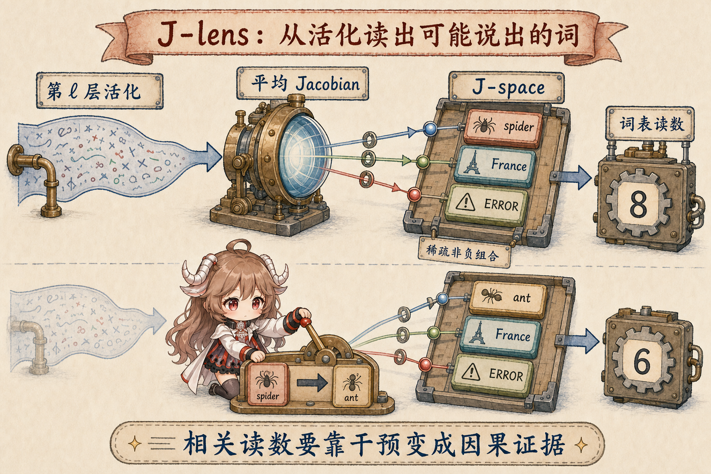

先给结论。J-space 不是一个固定层、一个新 attention head，也不是全部 residual stream 的别名。它是每个位置上由少量 token-linked J-lens vectors 张成的稀疏 subframe，通常只解释不到 10% 的 activation 方差，却与需要灵活调用的、可报告概念有稳定关系。
普通 Logit Lens 看输出，J-lens 看影响
Logit lens 把中间 residual activation 直接送入 unembedding，问“如果现在就解码，会像哪个 token”。问题是，中间层还没经过后续 nonlinear computation；一个 activation 对最终输出的作用，不一定沿着直接 unembedding 的方向传播。
Jacobian lens改问一个更因果的问题：在某个中间位置轻推 activation，最终 residual 或 logits 会怎样变？研究者对后续网络的 Jacobian 做平均，把每个 vocabulary token 的输出方向反向映射到中间层，由此得到一组 token-linked directions。一个方向标着 “France”，意思不是该神经元就是法国，而是沿这个方向改变中间 activation，会以可预测方式推动最终的“France-like”输出。

J-space 是动态坐标系，不是一块固定脑区
在每个 token 位置，方法用非负稀疏重构选择少量 J-lens vectors，形成 J-space。实验常把稀疏度限制在 k ≤ 25。它更像当前计算临时搭起的概念坐标系：参与概念随 prompt、位置和层变化；方向由词汇可解释，但组合仍可能是“bag of concepts”，并不天然带有完整语法和关系结构。
这解释了标题里的 silent reasoning。某些中间概念没有进入可见 CoT，却能被 J-lens 读出，并在后续计算中产生因果作用。“silent”只表示未被输出，不表示神秘的内在独白，更不表示研究者已经读取了模型的全部私密想法。
五类检验，把“可解释”推进到“像工作区”
| 性质 | 实验问题 | 观察 |
|---|---|---|
| Verbal report | 读出的内部概念能否被模型报告？ | J-lens 概念与模型随后给出的解释存在对应。 |
| Directed modulation | 沿概念方向写入会怎样？ | 能选择性提高相关回答，而非只造成随机扰动。 |
| Internal reasoning | 它是否参与输出前的计算？ | 消融或替换会改变下游答案。 |
| Flexible generalization | 改变一个概念，相关事实会否整体更新？ | France→China 后，下游能灵活迁移到中国相关事实。 |
| Selectivity | 所有计算都走这里吗？ | 不是；许多自动处理绕过 J-space。 |
最直观的反事实实验是 concept swap：把题目中的 “spider” 表征换成 “ant”，模型的下游计算会从八条腿转向六条腿；把 France 换成 China，不只是复述国名，首都等相关知识也跟着变化。它说明被改动的不是最后一个词，而是供后续模块使用的中间变量。
真正重要的结果，是它没有包办一切
大规模消融 J-space 后，模型仍保留流畅语言与不少基础任务能力，复杂和灵活推理却明显下降。这种选择性比“所有 activation 都很重要”更有信息量：J-space 像一个按需启用的广播工作区，而熟练、局部、自动化计算可以走旁路。
但边界也很清楚：单 token 名称更容易读；多词实体和关系难；不同 readout 可能不一致；workspace 与最终 motor/output boundary 仍模糊；哪些任务一定经过 J-space 也未知。重复训练后变得自动的行为，可能更少依赖这个通道。因此它支持一种 workspace-like mechanism，不证明 Global Workspace Theory 在模型中完整成立，更不证明模型具有 phenomenal consciousness。
它和 Agent、Memory、自进化分别是什么关系
对 Agent：它是决策链中的内部总线
J-space 可能承载当前任务中需要跨模块共享的目标、实体、规则或角色视角，最终影响 tool call。但工具是否执行，仍由 Agent runtime 决定。它解释的是“模型为什么偏向这个动作”的一部分，不是动作的权限系统。
对 Memory：它是工作集，不是存储层
J-space activation 随一次 forward pass 消失。外部 memory 只有被召回、注入 context，并在推理中形成 activation，才可能进入这个工作集。用操作系统类比：长期 memory 更像磁盘，context 像已装载页面，J-space 更像当前被多个计算阶段共享的少量寄存器与工作区。
对自进化：训练会改变默认视角和路由
论文发现 post-training 让 J-space 更靠近 Assistant perspective；后续的 reflection training 还能借助 workspace 中的 ethics/reflection directions 改变行为。这说明训练不仅增加知识，也可能改变哪些概念在内部被广播、怎样进入决策。系列第五篇会把这种 weight-level change 与外部 skill/memory 更新分开。
怎样把它用作研究仪器
可信流程不是截一张“模型想到了 X”的图，而是四步闭环：先在自然任务中读出候选概念；再用不同方法交叉验证；随后做写入、swap 或 ablation；最后检查行为变化是否特异、能否跨 prompt 复现。读出若没有反事实干预，只是线索；干预若同时破坏流畅性，也未必说明找到了特定机制。